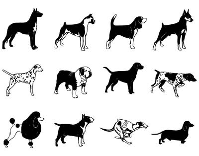
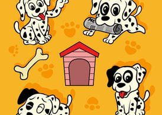
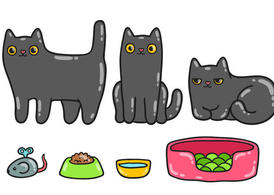

养宠问答
A CLEARER ANSWER
狗狗的寿命是多久？
遗憾的是目前还没有确切的回答这个普遍的问题。这是因为，狗的实际寿命取决于品种和大小。

贵宾眼屎多是怎么回事？
导致贵宾犬眼屎多的原因有很多。比如说上火，眼睛炎症，体内有虚热等等。这些病因就会导致贵宾犬眼屎增多。

猫驱虫药需不需要空腹喂食？
其实给猫咪喂驱虫药时并不需要空腹。

狗狗的寿命是多久？
遗憾的是目前还没有确切的回答这个普遍的问题。这是因为，狗的实际寿命取决于品种和大小。
贵宾眼屎多是怎么回事？
导致贵宾犬眼屎多的原因有很多。比如说上火，眼睛炎症，体内有虚热等等。这些病因就会导致贵宾犬眼屎增多。
猫驱虫药需不需要空腹喂食？
其实给猫咪喂驱虫药时并不需要空腹。